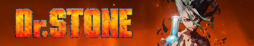

Dr. Stone
Dr. Stone (ドクターストーン Dokutā Sutōn?) é um mangá japonês escrito por Riichiro Inagaki e ilustrado por Boichi, publicado na Weekly Shōnen Jump desde 6 de março de 2017 com os capítulos individuais, divulgados pela editora Shueisha, e em formato takobon desde 7 de julho de 2017. Uma adaptação em anime produzida pela TMS Entertainment foi ao ar de 5 de julho de 2019 a 13 de dezembro de 2019.